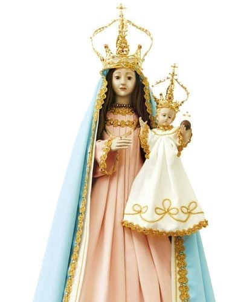
A devoção a Nossa Senhora da Penha tem origem no século XVII, no Brasil. Segundo a tradição, o frei Frei Pedro Palácios encontrou uma imagem da Virgem Maria no alto de um penhasco, no atual estado do Espírito Santo. Ao tentar levá-la para outro local mais acessível, a imagem retornava misteriosamente ao ponto onde foi encontrada, sendo interpretado como um sinal de que aquele era o lugar escolhido. Diante disso, foi construído o Convento da Penha, que se tornou um dos santuários mais antigos e importantes do Brasil. Até hoje, milhares de fiéis participam das festas e romarias, demonstrando sua fé e devoção. Essa história é vista como um sinal da presença e proteção de Maria junto ao povo.
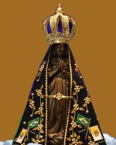
A devoção a Nossa Senhora Aparecida começou em 1717, quando três pescadores encontraram uma imagem de Maria no rio Paraíba do Sul, após várias tentativas sem sucesso na pesca. Primeiro apareceu o corpo da imagem e, depois, a cabeça. Após juntarem as partes, lançaram novamente as redes e conseguiram uma pesca abundante, fato considerado milagroso. A partir disso, a devoção cresceu entre o povo, acompanhada de relatos de graças alcançadas. Com o passar do tempo, Nossa Senhora Aparecida foi reconhecida como padroeira do Brasil, e seu santuário se tornou um dos maiores centros de peregrinação do mundo, reunindo milhões de fiéis todos os anos.
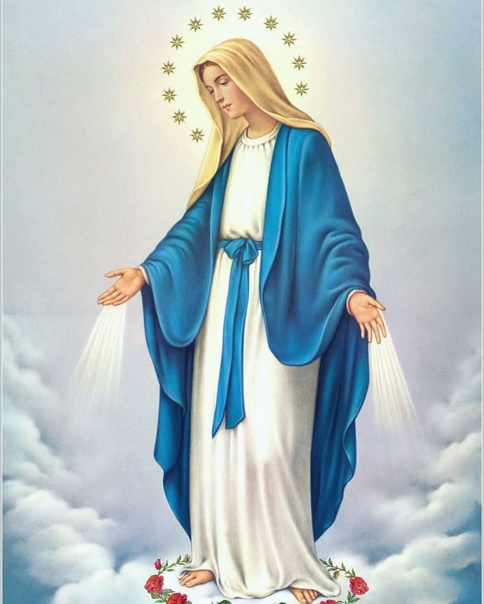
A devoção a Nossa Senhora das Graças surgiu na França, em 1830, quando a jovem freira Santa Catarina Labouré relatou ter tido aparições da Virgem Maria. Nessas visões, Maria apresentou um pedido especial: que fosse criada uma medalha com uma imagem sua e uma oração dedicada a ela. Essa medalha ficou conhecida como Medalha Milagrosa, pois muitas pessoas afirmaram ter recebido graças e proteção ao usá-la com fé. A devoção rapidamente se espalhou por diversos países, tornando-se uma das mais populares dentro da Igreja Católica. Além disso, a mensagem principal dessa devoção é a confiança na intercessão de Maria e na graça divina, incentivando os fiéis à oração e à fé constante.
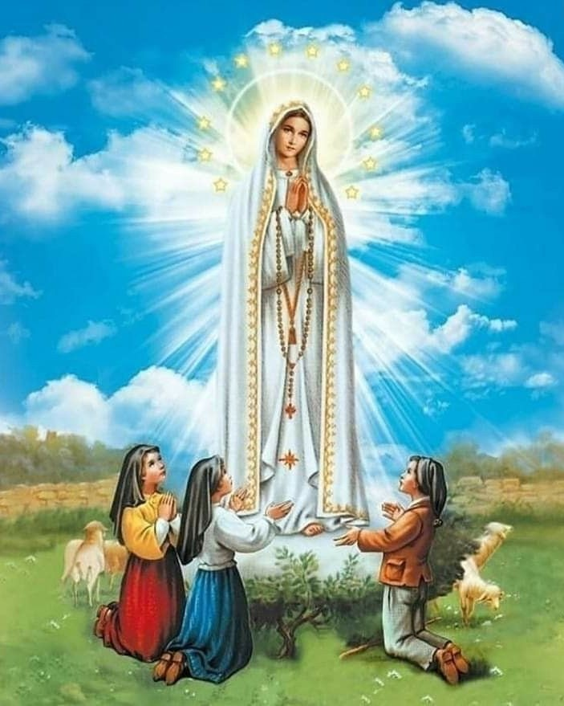
A devoção a Nossa Senhora de Fátima teve origem em 1917, na cidade de Fátima, em Portugal, quando três crianças, Lúcia dos Santos, Francisco Marto e Jacinta Marto, afirmaram ter visto a Virgem Maria em várias ocasiões. Durante essas aparições, Maria transmitiu mensagens sobre oração, conversão e a importância da paz. Um dos momentos mais marcantes foi o chamado “milagre do sol”, quando muitas pessoas relataram ver o sol se mover de forma incomum no céu. A partir desses acontecimentos, a devoção se espalhou pelo mundo, tornando Fátima um dos maiores centros de peregrinação, reunindo milhões de fiéis até os dias atuais.
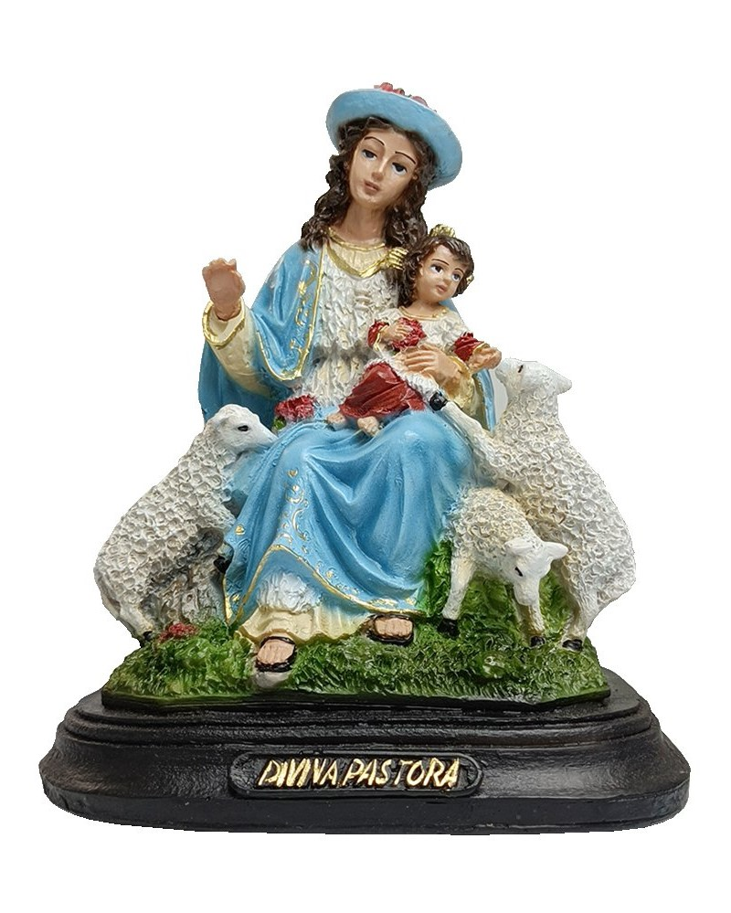
A devoção a Nossa Senhora Divina Pastora teve origem na Espanha, no século XVIII. A imagem apresenta Maria como uma pastora, cuidando de ovelhas, símbolo dos fiéis, transmitindo a ideia de proteção, guia e cuidado espiritual. No Brasil, essa devoção se tornou especialmente forte no estado de Sergipe, na cidade de Divina Pastora. Todos os anos, ocorre uma grande peregrinação, reunindo milhares de pessoas que caminham em sinal de fé e devoção. A tradição está ligada à confiança em Maria como aquela que conduz e protege seu povo, assim como um pastor conduz seu rebanho, uma imagem simples… mas poderosa o suficiente para mover multidões.
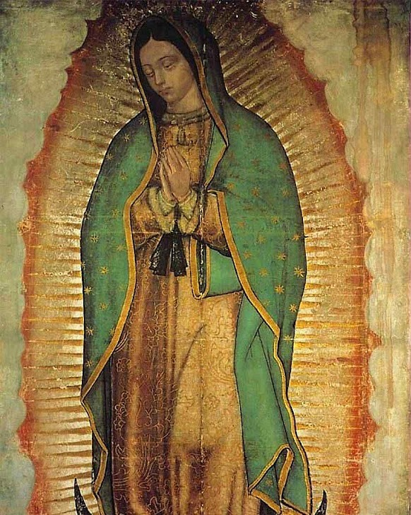
A aparição de Nossa Senhora de Guadalupe ocorreu em 1531, no México. Um indígena chamado Juan Diego afirmou ter visto a Virgem Maria no monte Tepeyac. Ela pediu que fosse construída uma igreja naquele local. Como prova ao bispo, Juan Diego levou flores em sua capa (mesmo fora de época). Ao abrir a capa, além das flores, apareceu milagrosamente a imagem de Maria estampada no tecido. Essa imagem é preservada até hoje e se tornou um dos maiores símbolos religiosos das Américas. A devoção cresceu rapidamente, especialmente entre os povos indígenas, sendo vista como um sinal de proximidade e proteção.
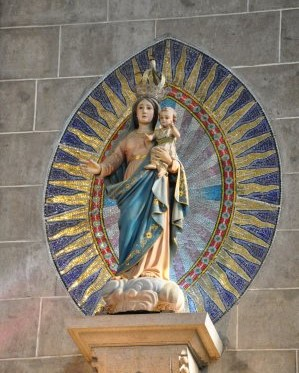
A devoção a Nossa Senhora do Alívio tem origem em Portugal, especialmente na região do Minho. O título expressa a confiança dos fiéis em Maria como aquela que traz alívio às dores, sofrimentos e dificuldades da vida. Está associada a pedidos de ajuda em momentos de aflição, doenças e problemas pessoais. Com o tempo, a devoção foi trazida ao Brasil pelos colonizadores portugueses, onde também passou a ser venerada por comunidades católicas. Embora não esteja ligada a uma única aparição específica como outras devoções, sua força vem da fé popular e da crença de que Maria intercede para trazer conforto e esperança aos que a invocam.
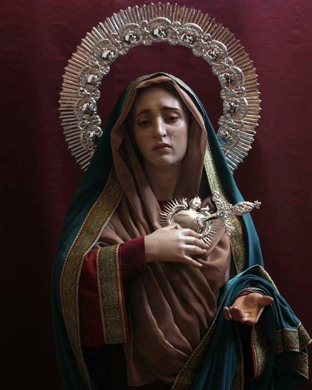
A devoção a Nossa Senhora das Dores contempla o sofrimento de Maria ao longo da vida de seu filho, Jesus Cristo. Não se trata de uma única aparição, mas de uma reflexão sobre suas dores, conhecidas como as “sete dores de Maria”. Entre elas estão momentos como a profecia de Simeão, a fuga para o Egito, a perda de Jesus no templo e, principalmente, sua presença durante a paixão e morte na cruz. Essa devoção convida os fiéis a meditarem sobre a dor, a fidelidade e a força de Maria diante do sofrimento. Por isso, é muito associada a pessoas que enfrentam dificuldades, perdas ou angústias, que buscam nela um exemplo de resistência e fé.
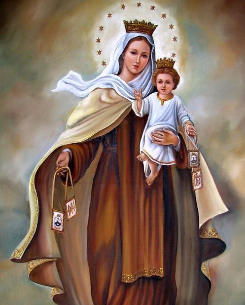
A devoção a Nossa Senhora do Carmo está ligada ao Monte Carmelo, em Israel, onde surgiu a Ordem Carmelita. O título significa que Maria é vista como protetora e guia espiritual daqueles que seguem esse caminho. Segundo a tradição, em 1251, a Virgem Maria apareceu a São Simão Stock, entregando-lhe o escapulário — um sinal de proteção e compromisso com a fé. O escapulário tornou-se um dos símbolos mais conhecidos dessa devoção, sendo usado por fiéis como expressão de confiança na proteção de Maria e em sua intercessão. A festa de Nossa Senhora do Carmo é celebrada em 16 de julho e reúne muitos devotos em diversas partes do mundo.
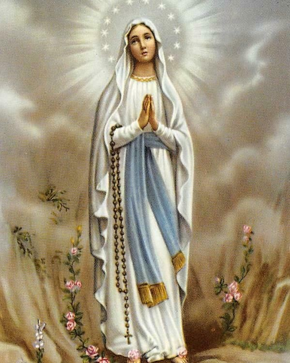
A devoção a Nossa Senhora de Lourdes teve origem em 1858, na cidade de Lourdes, na França, quando a jovem Bernadette Soubirous afirmou ter visto a Virgem Maria diversas vezes em uma gruta chamada Massabielle. Durante essas aparições, Maria transmitiu mensagens de oração, penitência e confiança em Deus. Em uma das visões, foi indicado um local onde brotou uma fonte de água, que passou a ser associada a curas consideradas milagrosas por muitos fiéis. Com o tempo, Lourdes se tornou um dos maiores centros de peregrinação do mundo, recebendo milhões de pessoas todos os anos, especialmente doentes que buscam esperança, conforto e possível cura.
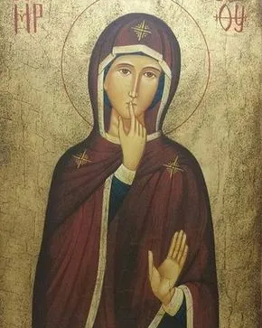
Nossa Senhora do Silêncio é um título devocional mais recente e simbólico, que representa Maria como modelo de escuta interior, recolhimento e contemplação. O “silêncio” aqui não é ausência, mas uma atitude de atenção profunda e espiritual.Por esse motivo, algumas comunidades associam essa devoção às pessoas surdas, vendo em Maria um exemplo de comunicação que vai além das palavras, baseada no coração, na fé e na compreensão interior. Embora não seja oficialmente declarada padroeira dos surdos, essa ligação espiritual é valorizada por grupos que buscam inclusão e reconhecimento dentro da fé.
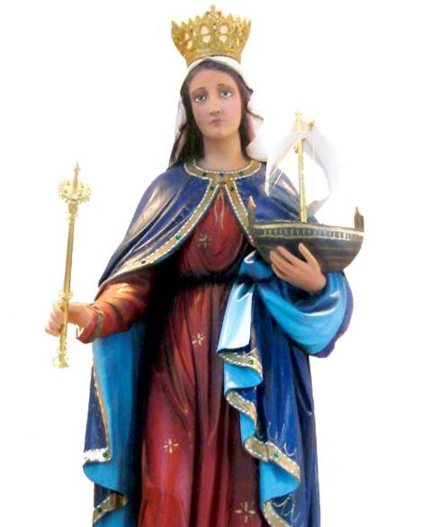
A devoção a Nossa Senhora da Boa Viagem está ligada à proteção dos viajantes, especialmente aqueles que enfrentavam longas jornadas pelo mar. Surgiu em Portugal e se espalhou para o Brasil, onde ganhou grande popularidade. Os fiéis recorrem a ela pedindo segurança, proteção contra perigos e um retorno tranquilo. Por isso, é comum que pessoas façam orações antes de viajar, confiando sua jornada à sua intercessão. No Brasil, cidades como Recife possuem igrejas dedicadas a esse título, mostrando a força dessa devoção ao longo do tempo.
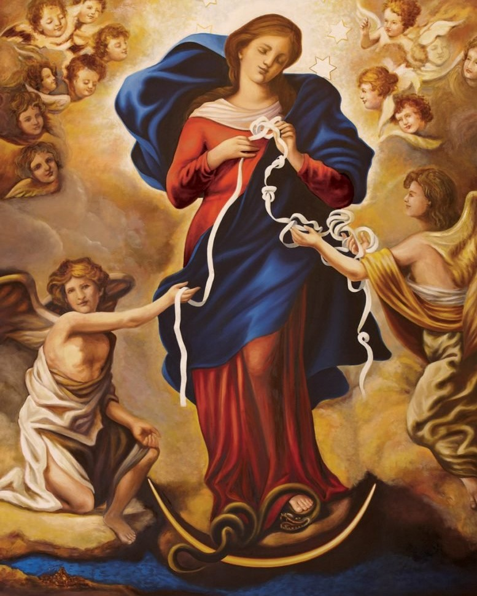
A devoção a Nossa Senhora Desatadora dos Nós tem origem na Alemanha, no século XVII. A imagem representa Maria desatando nós de uma fita, simbolizando os problemas, dificuldades e pecados que complicam a vida das pessoas. Essa devoção ganhou grande força quando foi divulgada por Papa Francisco, ainda antes de se tornar papa, ajudando a espalhá-la pelo mundo, especialmente na América Latina. Os fiéis recorrem a esse título pedindo ajuda para resolver situações difíceis, conflitos familiares e obstáculos pessoais, acreditando que Maria pode “desatar” aquilo que parece impossível.
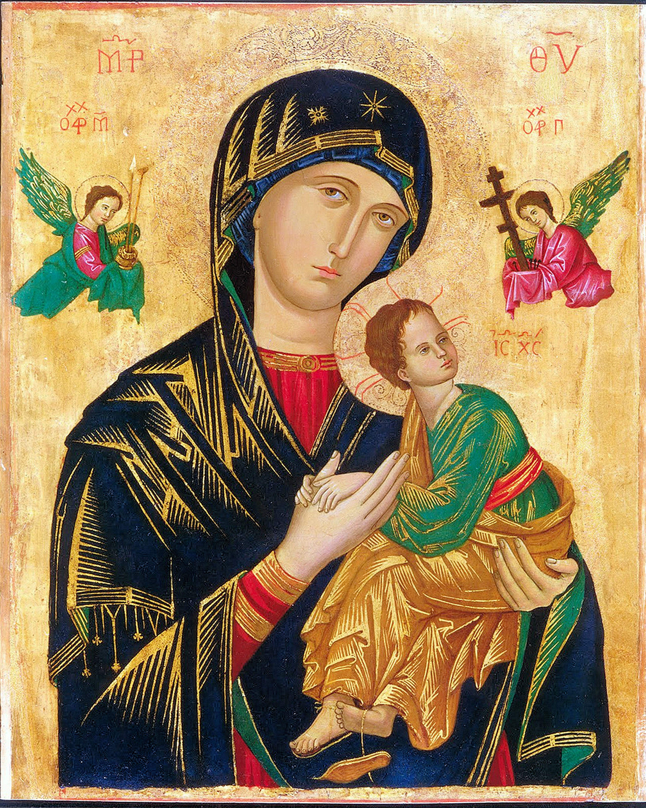
A devoção a Nossa Senhora do Perpétuo Socorro tem origem em um antigo ícone bizantino, muito venerado pela Igreja. A imagem mostra Maria com o Menino Jesus, cercada por símbolos da paixão, transmitindo a ideia de proteção e auxílio constante.O título “Perpétuo Socorro” significa ajuda contínua, sem fim. Por isso, os fiéis recorrem a ela em momentos de dificuldade, confiando que Maria nunca abandona aqueles que pedem seu auxílio. Essa devoção foi amplamente divulgada pelos missionários redentoristas e hoje é uma das mais populares no mundo católico, marcada por novenas e orações frequentes.
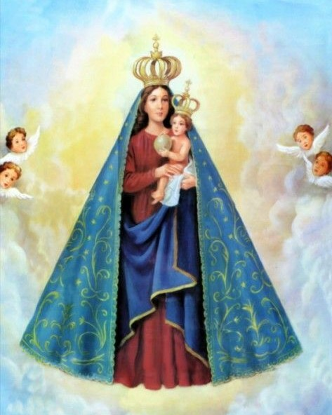
A devoção a Nossa Senhora de Nazaré tem origem no estado do Pará, no Brasil, no século XVIII. Segundo a tradição, o caboclo Plácido José de Souza encontrou uma pequena imagem de Maria próxima a um igarapé. Sempre que levava a imagem para sua casa, ela misteriosamente retornava ao local onde foi encontrada, sendo interpretado como um sinal de que ali deveria ser construído um espaço de devoção. Com o tempo, surgiu o Círio de Nazaré, uma das maiores manifestações religiosas do mundo, realizada todos os anos em Belém, reunindo milhões de fiéis em uma grande procissão marcada por fé, promessas e devoção.